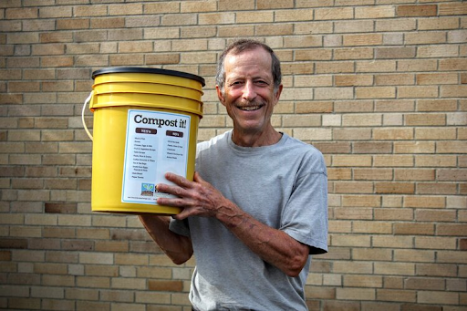
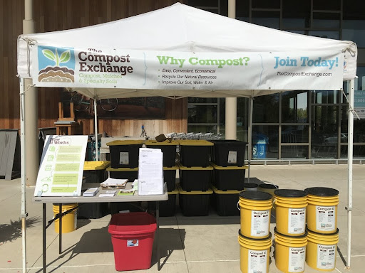

Recap: Carbon emissions is the amount of carbon dioxide
(a type of gas) that is released into our atmosphere. Our atmosphere is the protective bubble that surrounds
our planet. When we put too many of those greenhouse gases into the atmosphere, we can heat up the planet, and
that is so harmful to nature!

What is Composting?
When we recycle plastic, we melt it down, allowing us to reuse the plastic. By composting, the Earth breaks down food scraps into soil. This soil has a lot of nutrients that could be used as fertilizer to help crops (like beans and corn) grow! Food scraps could include banana peels, old leftovers from dinner, the tops of strawberries, and more! Organisms like earthworms decompose the food waste into useful nutrients. That’s why they are called decomposers!
Types of Composting
Cold (Passive Composting)
Cold composting is when you let things naturally decompose. You just leave nature to do the work, checking up on it occasionally. If you do not have a lot of food scraps and waste, you should use this method! But if you have a lot, you will be left with a huge pile that takes a long time to decompose (break down). One problem about this method is that it doesn’t kill off bad bacteria in the process. You could be left with harmful fungi and parasites. And this pile of compost is a lot more stinky and wet! Yuck!
Hot (Active Composting)
For this method, you really need to manage your composting pile. You need to check the amount of nitrogen and carbon to make sure it is at the best ratio possible. This requires a lot of attention and knowledge. You also need to have the right amounts of water and air. This process is a lot faster than cold composting and it does kill off the bad bacteria because of its warmer temperature.
How does composting help reduce our carbon emissions?
There is less waste that goes into our landfills (where all of the trash goes).
↓
During anaerobic decomposition (a fancy word for decomposition from organisms that don’t need free-flowing air), 50% methane and 50% carbon dioxide is released.
↓
This happens when the food scraps get stuck underneath mountains of trash in a landfill and can’t get to air! The decomposers that need air can’t survive, so the decomposers that can survive release a lot of bad gases into the air.
↓
So, we shouldn’t put our food scraps into landfills where they release those bad gases!
How can you help...?

Ray Leard holding a “Compost it!” Bucket. The Compost Exchange.
Meet Ray Leard!
Ray is the owner of a company called The Compost Exchange. He has worked to make it easy for people to compost their food scraps.
Let’s see what The Compost Exchange does!
 First, you need to buy the monthly membership of $6 a month! This lets them bring composting bins that you can put your food scraps into. They bring these yellow buckets to composting factories. You can even have a whole team of families compost. Some neighborhoods and cities do that!
First, you need to buy the monthly membership of $6 a month! This lets them bring composting bins that you can put your food scraps into. They bring these yellow buckets to composting factories. You can even have a whole team of families compost. Some neighborhoods and cities do that!
These are the tents that are set up to hold your bins in the city!
